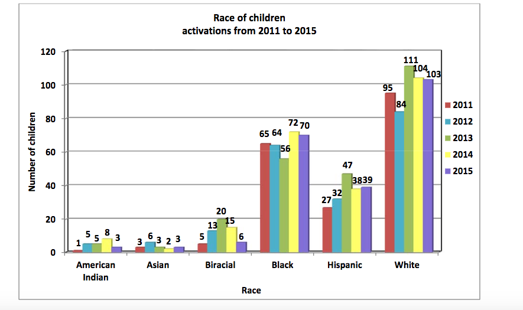

According to the FBI, in 2016 there were 465,676 National Crime Information Center (NCIC) entries for missing children. However, many children are never reported missing, which means there is no relaibale way to determine the total number of children who are actually missing in the U.S.
Finding a missing person requires the coordinated efforts of family, communities, law enforcement and media. Historically, law enforcment and media outlets have a reputation for biased efforts regarding the search and exposure of missing minority persons, even though missing persons of color make up more than half of all victims. Raising awareness to help locate and ensure the safety of persons of color reported missing or in danger is the Missing Minority Network's top priority.
